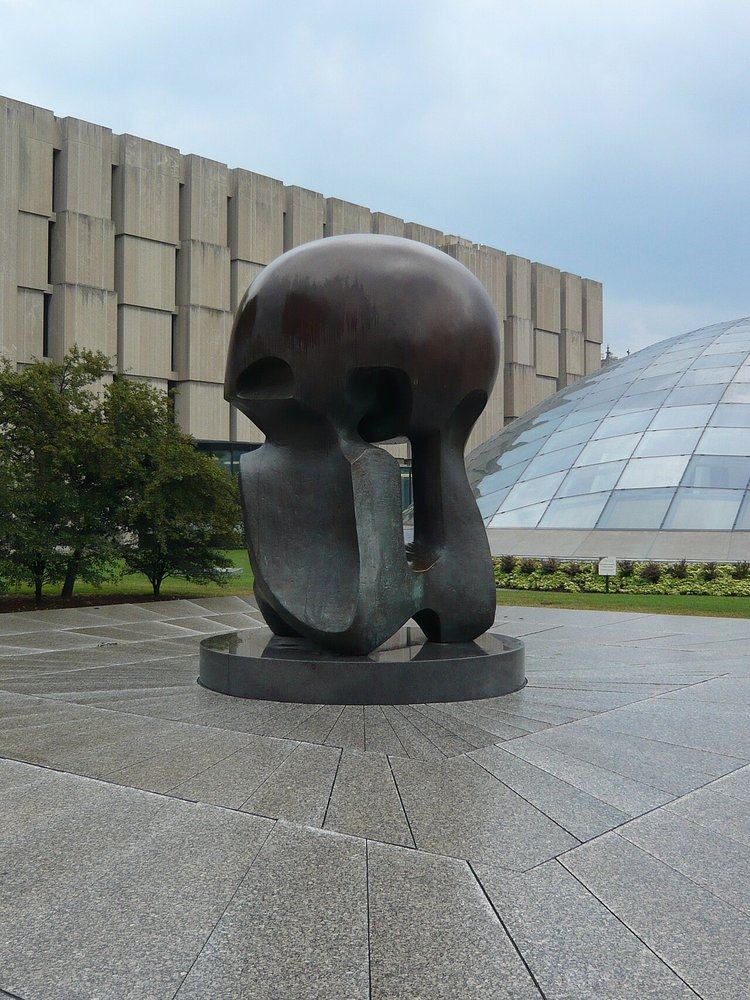

Nuclear Energy
Henry Moore · 1964–66 · Bronze · University of Chicago
In copyright. Look and learn: shown for study, not for download.
The bronze stands on the University of Chicago campus at the site of Chicago Pile-1, the world's first nuclear reactor. Moore said he had already had the idea for the sculpture before the university's delegation came to ask him for one. It was unveiled at precisely 3:36 p.m. on December 2, 1967, twenty-five years after the first self-sustaining chain reaction. The work had been called Atom Piece; the name was changed before the unveiling to avoid a similarity with the phrase atom peace.